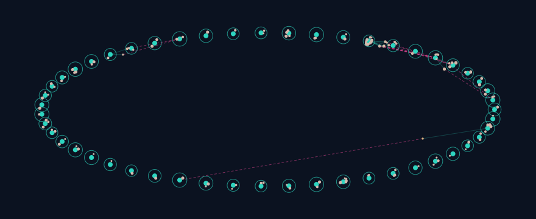

Proof — freeze seam12a, run o94-scale10m
- 10Mtokens / 13,081 docs / 63,441 atoms
- ~0.74 / ~0.49guided recall@10: all-sources / leave-source-out (120 probes each)
- 5,847leftover items — drained from 5,847 to 0 over 6 iterations; wall 9,494.9 s (~2.6 h)
- 253 filesfrozen sources, 0 diffs; 164,195 final commits; peak RAM ~8.5 GB
Recall@10 over 120 probes per mode (all-sources / leave-source-out): guided searches the organized store; flat is the no-organization control at the same scoring budget (matched work).

Watch it, then run it
Watch — the map, two ways
How: the map is real (80 s) · Do: replay a probe (56 s) · captions included. PROOF · staged 10M run Voice: synthetic
Earlier overview cut + interactive demo.
Run — your own explorer in 3 lines
git clone https://github.com/Anshul48/trace.git
cd trace
./tools/run-trace.sh # serves docs/, opens the explorerPython 3 only — no services, no containers. Windows: tools\run-trace.bat.
Three doors: tour, use, play
Researchers start with proof above; developers pick a door. How-it-works detail lives behind the tour door, not on this page. Recorded data unless labeled live
Tour — how it works
Five scenes on the real graph: feed in, break into atoms, self-organize, ask, repair — then the raw recorded run. Starts on the small graph; 10M one click away.
Use — run it in 5 minutes
Verified quickstart from the README: fresh tarball extract, in-tree venv, smoke checks, and a real 10K-token pilot to PASS. Your machine, your data: Live — only yours.
Play — touch real data
Query recorded exports in your browser: preset questions over probes.json, free-text over the 20K slice, 10M graph one click away. Recorded freeze, not live.
Full quickstart block (byte-identical to the README section above)
# 1. Get the frozen source and verify it (1.2 MB source-only tarball).
sha256sum -c seam12a-fork.tar.gz.sha256
# expect: seam12a-fork.tar.gz: OK
# Extract it; the runnable tree is fix7/cand/ (set CAND to that path).
tar xzf seam12a-fork.tar.gz
CAND=$PWD/fix7/cand
cd "$CAND"
# 2. Environment, created INSIDE the extracted tree (needs uv;
# without uv: python3 -m venv .venv). The tarball ships no README,
# setup.py, pyproject.toml, or requirements file, so there is nothing
# to pip-install from the package itself: create a venv and add the two
# runtime dependencies (blake3 is hard-required by tlsys/identity.py;
# verified with numpy 2.5.4; o94 run receipts record numpy 2.5.3).
uv venv .venv --python /usr/bin/python3
uv pip install --python .venv/bin/python "numpy==2.5.4" "blake3==1.0.11"
# 3. Smoke checks (all paths relative to $CAND).
SUP_PYTHON=$CAND/.venv/bin/python bash runtime.sh tools/product_pilot.py --help
# expect: exit 0, full usage printed (all o94 flags present).
PYTHONPATH=$CAND/fork/tl-sys $CAND/.venv/bin/python -B fork/tl-sys/tests/test_o93_repair_columnar.py
# expect: o93 repair-columnar: all groups PASS (221 checks).
# The package integration suite also passes unmodified:
$CAND/.venv/bin/python -B -m unittest tests.test_integration
# expect: Ran 6 tests ... OK (about 3 s).
# 4. Build the synthetic 10K corpus (layout tl-gpu-embcache-v1; corpus
# synthetic, pipeline 100% genuine). No corpus generator ships in the
# tarball, so this inline step builds synth-data/ from the shipped
# chunker (same seeded content as the reference run: 48 docs).
$CAND/.venv/bin/python - <<'EOF'
import hashlib, json, sys
from pathlib import Path
import numpy as np
sys.path.insert(0, 'fork/tl-sys')
from tlsys.ingest import chunk_text
OUT = Path('synth-data'); CACHE = OUT / 'emb_cache'
RPS, NDOCS = 256, 48
TOPICS = [
('sport', ['match', 'team', 'score', 'player', 'coach', 'season', 'league', 'goal', 'field', 'training', 'victory', 'rival', 'trophy']),
('harbor', ['tide', 'dock', 'vessel', 'cargo', 'anchor', 'harbor', 'sailor', 'lighthouse', 'storm', 'channel', 'ferry', 'net', 'catch']),
('orchard', ['apple', 'harvest', 'soil', 'rain', 'branch', 'blossom', 'farmer', 'basket', 'cider', 'frost', 'seed', 'grove']),
('circuit', ['voltage', 'resistor', 'signal', 'wire', 'current', 'board', 'sensor', 'diode', 'ground', 'meter', 'switch', 'relay']),
]
rng = np.random.default_rng(0)
OUT.mkdir(parents=True, exist_ok=True); CACHE.mkdir(parents=True, exist_ok=True)
docs = []
for i in range(NDOCS):
topic, words = TOPICS[i % len(TOPICS)]
sents = []
for s in range(14):
w = rng.choice(words, size=14, replace=True)
sents.append('Document %d sentence %d about %s: %s.' % (i, s, topic, ' '.join(w)))
docs.append({'doc_id': 'synth-doc-%03d' % i, 'text': ' '.join(sents)})
with open(OUT / 'docs-100m.jsonl', 'wb') as f:
for d in docs:
f.write((json.dumps(d) + '\n').encode())
config = json.dumps({'normalize_embeddings': False}, separators=(',', ':'))
meta = {'format': 'tl-gpu-embcache-v1', 'dim': 384, 'dtype': 'float32-le',
'key_config_json': config,
'config_id': hashlib.sha256(config.encode()).hexdigest()[:16],
'rows_per_shard': RPS}
(CACHE / 'meta.json').write_text(json.dumps(meta))
prefix = b'tl-gpu-embcache-v1\0' + config.encode() + b'\0'
rows = []
for d in docs:
chunks = chunk_text(d['text']) or [(0, 0, '', 0, 0)]
for ch in chunks:
body = ch[2].encode('utf-8')
key = hashlib.sha256(prefix + body).hexdigest()
rows.append((key, hashlib.sha256(body).hexdigest(), len(body)))
vecs = rng.standard_normal((len(rows), 384)).astype(np.float32)
with open(CACHE / 'index.jsonl', 'w') as f:
for g, (key, csha, blen) in enumerate(rows):
f.write(json.dumps({'key': key, 'chunk_sha256': csha, 'byte_len': blen,
'dim': 384, 'shard': g // RPS, 'row': g}) + '\n')
for sh in range((len(rows) + RPS - 1) // RPS):
vecs[sh * RPS:(sh + 1) * RPS].astype('<f4').tofile(CACHE / ('shard_%06d.f32' % sh))
print(json.dumps({'docs': len(docs), 'chunks': len(rows), 'shards': (len(rows) + RPS - 1) // RPS}))
EOF
# expect: {"docs": 48, "chunks": 96, "shards": 1}
# 5. A real 10K-token pilot through the genuine entry point.
SUP_PYTHON=$CAND/.venv/bin/python bash runtime.sh tools/product_pilot.py --tokens 10000 --profile local --source-root $CAND --data-dir $CAND/synth-data --out $CAND/out-pilot --drain-attribution --drain-census --holon-descriptor-columnar --overrides-columnar --descriptor-matrix-all --per-view-sharing --cold-scan-chunk 4096 --repair-columnar --candidate-source hnsw --drain-bounded-k 32 --candidate-shadow-audit 8
Recall race: guided vs flat, matched work
Frozen seam12a, run o94-scale10m: both modes ran 120 probes each under matched work budgets. Flat is the weak-baseline control, shown here as bars; the benchmarks table carries the full rows. Protocol agreement, not a SOTA claim Replay the staged run instead: probe 7 race
Where TRACE loses
Published misses first — every row measured, receipt-linked. Limits are the feature
| Loss | Measured | Receipt |
|---|---|---|
| Fresh Narrow stores trail references | Shipped stack trails bm25/dense on four lanes (1061 queries × arms, 0 failures); leads only BRIGHT-pony | C2-10M-PUBLICATION Claim 3 |
| Pony lane: every arm scores low | nDCG@10: bm25 0.055 / dense 0.033 / shipped 0.064 (112 queries) — "all arms score low there" | C2-10M-PUBLICATION lane table |
| Attach wall | Cold attach 103–122 s per request; resident query 0.78–1.41 s. No sub-50 ms story at 10M. | C2-10M-PUBLICATION Claim 5 |
| Flat beats guided sometimes | Staged run: flat wins 4 of 120 leave-source-out probes (all cross family); probe 78 scores guided 0.0 | replay probe 83 |
| 100M unclaimed, R9 OOM | "100M retrieval is NOT evidenced and NOT claimed"; R9 10M RelIndex verification FAILED (OOM) | C2-10M-PUBLICATION scope notes |
Receipts
Two runs, both pinned — staged replay run + frozen publication run
| Run | Use it for | Pins |
|---|---|---|
| Staged explorer run (guided 0.73 / LSO 0.4758) | replays, films, /play/ — every row clickable | harness 9f516288 · generation d21a3aef · provenance.json |
Frozen seam12a, run o94-scale10m (guided 0.7367 / LSO 0.4883) | publication numbers on this page | tarball 8d3bbb6b… · harness 9f78479a · probes b332d62d |
Same corpus (10,003,381 TOK-v1 tokens, 13,081 docs, 63,441 atoms) and same 120 probes — different harness runs, different measurements. Never mixed without labels.
python3 docs/play/probe-row.py 7 # probe 7 row + 120-probe means
python3 docs/play/probe-row.py 83 --lso 1 # a probe flat winsSeparate BEIR rung (never beside probe-vector numbers): TL ndcg10 0.6311, 809 scifact queries, frozen Narrow 4c8c9673.
Memory: ~8.5 GB peak on one VM (seam12a o94)
Parent-process peak 8,489 MiB (8.3 GiB); child 7,169.2 MiB (rss receipts, 1,899 rows).
Bar: parent peak against a 16 GiB scale (52%). One measured run, one VM
Scale ladder: measured vs blocked
| Rung | Status | Receipt |
|---|---|---|
| 20K portable (20,030 tok / 88 docs / 144 atoms) | measured, PASS in 27.8 s | run20k.cast 7ef2cca3… |
| 10K pilot (10,080 tok / 36 docs / 72 atoms) | measured, PASS in ~26 s | out-pilot/result.json |
| 10M freeze (10,003,381 tok / 13,081 docs) | measured, one run on one VM | result.json, 1,899-row RSS series |
| 10M reproduction | blocked: external corpus, VM guard, 1M local cap | REPRO guide; small path runs anywhere |
| 100M+ roadmap | unmeasured | roadmap, not a claim |
Limits (single block)
- One measured run on one VM through the frozen
product_pilotharness. - Explorer graph files are the earlier freeze; counts match (3,711 parents / 9,177 leaves / 63,441 atoms).
- Recall numbers are protocol agreement under matched work, not SOTA claims.
- 10M reproduction is blocked (external corpus, VM guard, 1M local cap); the small path runs anywhere.
- 100M+ is unmeasured roadmap.
Go deeper
README · architecture · benchmarks · reproduction guide · code tour · explorer · recording · release seam12a-10m-freeze